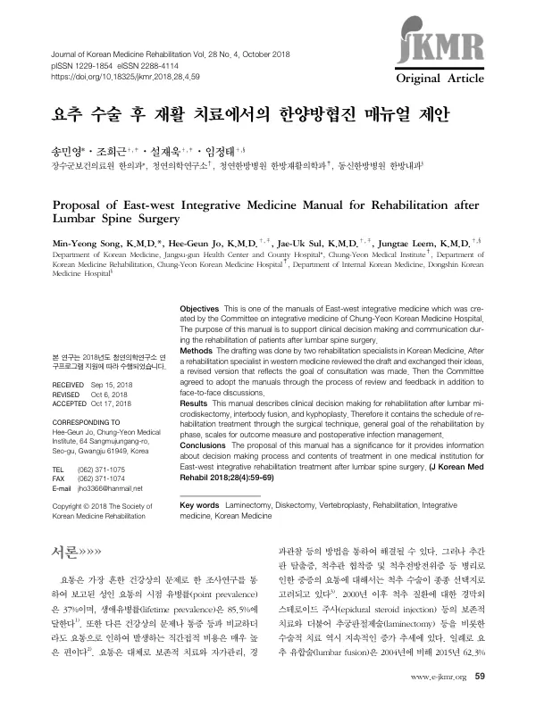

Proposal of East-west Integrative Medicine Manual for Rehabilitation after Lumbar Spine Surgery
Song MY, Jo HG, Sul JU, Leem J
Journal of Korean Medicine Rehabilitation 28(4):59-69

첫 장 · 오픈액세스First page · open access
논문 소개Summary
요추 수술 뒤 재활을 위한 동서협진 매뉴얼입니다. 어깨와 무릎에 이어 나온 연작의 세 번째로, 만드는 절차는 같습니다. 한의 재활의학 전문의 두 사람이 초안을 잡고 양방 재활의학 전문의가 검토해 의견을 주고받은 뒤 협진 목표를 반영해 고쳤으며 위원회가 검토와 대면 논의로 채택했습니다. 요추 미세추간판절제술과 유합술, 척추후만성형술 뒤의 재활을 다루며 수술 기법에 따른 재활 일정과 시기별 목표를 담았습니다. 앞선 두 매뉴얼과 달리 결과 평가를 위한 척도를 함께 실었고 수술 후 감염 관리도 넣었습니다.
A manual of East-West integrative medicine for rehabilitation after lumbar spine surgery. Third in the series following the shoulder and knee manuals, it was produced by the same procedure: drafted by two Korean medicine rehabilitation specialists, reviewed by a Western medicine rehabilitation specialist with ideas exchanged, revised to reflect the goal of consultation, and adopted by the committee after review and face-to-face discussion. It covers rehabilitation after lumbar microdiscectomy, interbody fusion and kyphoplasty, setting out the rehabilitation schedule by surgical technique and general goals by phase. Unlike the two preceding manuals it also includes scales for outcome measurement, alongside management of postoperative infection.
인용Cite
Song MY, Jo HG, Sul JU, Leem J. Proposal of East-west Integrative Medicine Manual for Rehabilitation after Lumbar Spine Surgery. Journal of Korean Medicine Rehabilitation. 2018;28(4):59-69. doi:10.18325/jkmr.2018.28.4.59